記述統計
最終更新日：2025年4月7日
この章では、生のデータを加工し、情報を集約することで、データの特徴を分かりやすく表現する方法を学んでいきます。
このように、手元のデータの特徴や傾向を明らかにすることを記述統計といいます。
具体的には、表やグラフを作成したり、統計量を計算します。
データは、はじめにで説明している過去の学祭の売り上げデータを使っていきます。それぞれの変数が何を表しているのかなどは、そちらを参照してください。
ファイルを開くと分かるように、生のデータは数字の羅列にすぎません。
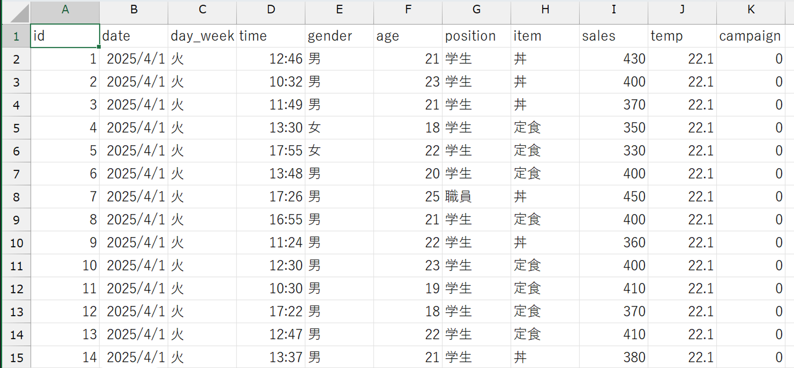
以下では、具体的にどのように加工すると分かりやすくなるのかを学んでいきます。
ちなみに、こちらもはじめにで説明しているように、生のデータファイルをそのまま操作することは避けましょう。ダウンロードしたファイルはコピーを作成し、生のデータと操作用データを別々に管理するか、新しく操作用データを作成して、ブックリンクでデータを参照するようにしましょう。
表とグラフ
度数分布表
学祭の売り上げ向上を目指すためには、まず現状を知る必要があります。ここでは、過去の学祭で、1回の買い物あたりの売上金額がどのように分布しているかを見てみましょう。売上金額（sales変数）を\(100\)刻みで区切って表にまとめるだけでも見やすくなります。これを度数分布表といいます。
| 階級 | 階級値 | 度数 | 相対度数 | 累積相対度数 |
|---|---|---|---|---|
| 200～299 | 250 | 1 | 0.002 | 0.002 |
| 300～399 | 350 | 143 | 0.279 | 0.281 |
| 400～499 | 450 | 310 | 0.605 | 0.887 |
| 500～599 | 550 | 58 | 0.113 | 1.000 |
| 合計 | 512 | 1.000 |
度数分布表は、以下のような項目で構成されています。
階級
まとめる値の範囲（ここでは100円刻みですが、扱うデータの単位によって適切な範囲を決める必要があります）
（例）100以上200未満の階級、200以上300未満の階級など
- 階級値
その階級を代表する値であり、各階級の中央の値のこと
（例）100以上200未満の階級の階級値は150
度数
階級内に所属する観測値の数
相対度数
サンプルサイズに占める度数の割合 \(\left(= \frac{度数}{サンプルサイズ}\right)\)
累積相対度数
1番小さい階級からその階級までの相対度数を足し合わせたもの
Excelで度数分布表を作る
度数分布表は、データの特徴をつかむための第一歩です。
Excelは、セルに「= 2 + 3」や「= SUM(A1:Z100)」を入力することで、つまり、「= 計算式」や「= 関数」を入力することで、計算結果を表示してくれます。
Excelで度数分布表を作成するときは、度数、相対度数、累積相対度数を次のような関数を使って計算していきます。
度数
COUNTIF関数を使い、「階級の上限値未満の観測値の個数」から「階級の下限値未満の観測値の個数」を引く
（例）100以上200未満の階級の度数 \(=\) 200未満の観測値の個数 \(-\) 100未満の観測値の個数 \(=\) 100以上200未満の観測値の個数
COUNTIF関数
COUNTIF(データの範囲, "条件")
（例）200未満の観測値の個数：= COUNTIF($A:$A:, "<200")
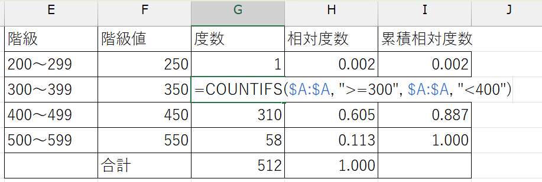
データの範囲は、普通に選択しただけだと、他のセルに関数をコピペしたときに、参照元のセルとコピペ先の位置関係に応じてデータの範囲も移動してしまいます。同じ関数を何回か使う必要があり、その際にデータの範囲を固定したいときは、列と行の英数字の前に
$を付けると便利です。- 列と行を固定したいとき：
$A$1:$B$20 - 列を固定したいとき：
$A1:$B20 - 行を固定したいとき：
A$1:B$20
関数を入力しているセルを選択している状態でF4を押すと切り替えられます。
- 列と行を固定したいとき：
条件には比較演算子（数字の大小を比較する記号）を使います。これらの記号は、他のプログラミング言語でも共通なので、ぜひ覚えてください。
A < BAはBより小さい A > BAはBより大きい A <= BAはB以下 A >= BAはB以上 A = BAとBは等しい A != BAとBは等しくない
ついでに、SUM関数で度数の合計（つまり、サンプルサイズ）を計算しておくと、この後の作業が少し楽になります。
SUM関数
SUM(データの範囲)
（例）度数の合計：=SUM(G2:G5)
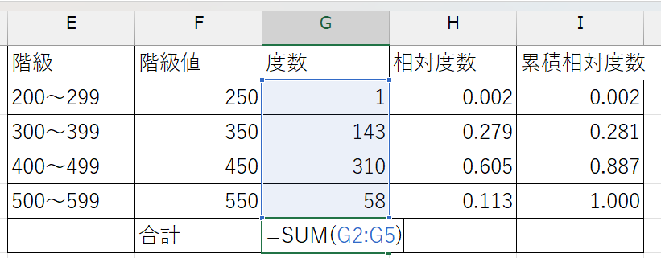
相対度数
すでに計算した度数セルと度数の合計セルを使い、 \(\frac{度数}{サンプルサイズ}\)を計算する
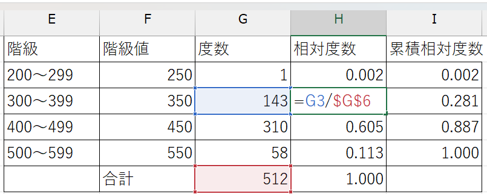
累積相対度数
それまでの累積相対度数とその階級の相対度数を足す （例）
- 200以上300未満の階級の累積相対度数：
=H2 - 300以上400未満の階級の累積相対度数：
=I2 + H3
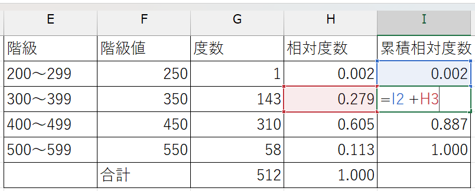
すべての階級についてそれぞれの値を計算することで、度数分布表を作成できます。
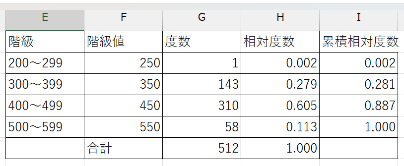
これで、売上金額の分布を把握することができました。
データのビジュアル化
度数分布表はデータの特徴をとらえるのに便利ですが、さらに「見える化」することで、よりデータの特徴をとらえやすくなります。
次は、度数分布表を見える化したヒストグラムと、その他の代表的なグラフを作成していきましょう。
ヒストグラム
階級値を横軸に、度数を縦軸にとったグラフをヒストグラムといいます。
どちらにも階級値と度数の情報は含まれますが、ヒストグラムの方がより視覚的にデータの特徴をつかめることが分かると思います。
380円～480円のデータが多い。
330円以下と530円以上のデータは少ない。
430円を中心に、ほぼ左右対称に分布している。
ほとんどのデータが330円～530円の間に分布している。
といったことが読み取れるのではないでしょうか。
Excelでヒストグラムを作る
Excelでは、生のデータから直接ヒストグラムを作ることができます。
- データを選択した状態で「挿入」→「グラフ」→「ヒストグラム」を選択する
- バー（ビンと呼ぶ）の幅を変えたいときは、グラフを右クリックし、「グラフエリアの書式設定」→「軸のオプション（横 項目軸）」→ヒストグラムアイコンをクリック→「ビンの幅」を適切な幅に変更する
ヒストグラムと棒グラフ
ヒストグラムとよく似たグラフに、棒グラフがあります。
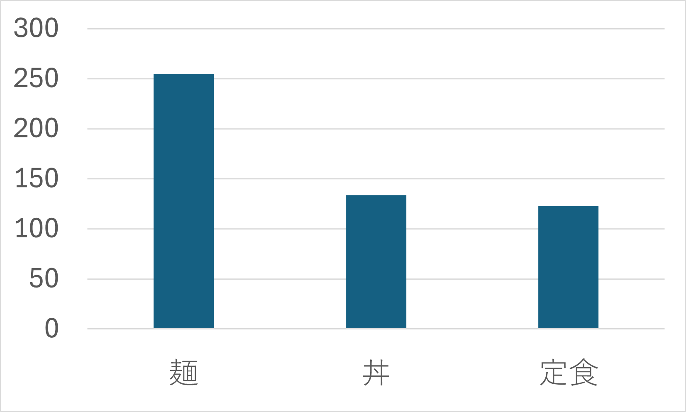
どちらを使っても同じかと思われがちですが、実はこの2つはさまざまな点で異なります。
| ヒストグラム | 棒グラフ | |
|---|---|---|
| データの種類 | 連続した数値データ | カテゴリデータ |
| 横軸の順番 | 連続した順番で並べる | 決まりはない |
| 縦軸 | 度数 | 度数に限らない |
| 用途 | 分布をみる | 数量の大小を比較する |
| バーが示すもの | バーの面積が度数（or 相対度数）を示す | バーの高さが数字の大小を示す |
| 棒の間の間隔 | なし | あり |
例えば、同じ人口を表すとしても、年齢階級ごとの人口や所得階級ごとの人口などを表す際にはヒストグラムが適切であるのに対し、地域別人口や誕生月別人口を表す際には棒グラフが適切です。
箱ひげ図
ヒストグラムと並んで使いこなせるようになってほしいグラフが箱ひげ図です。
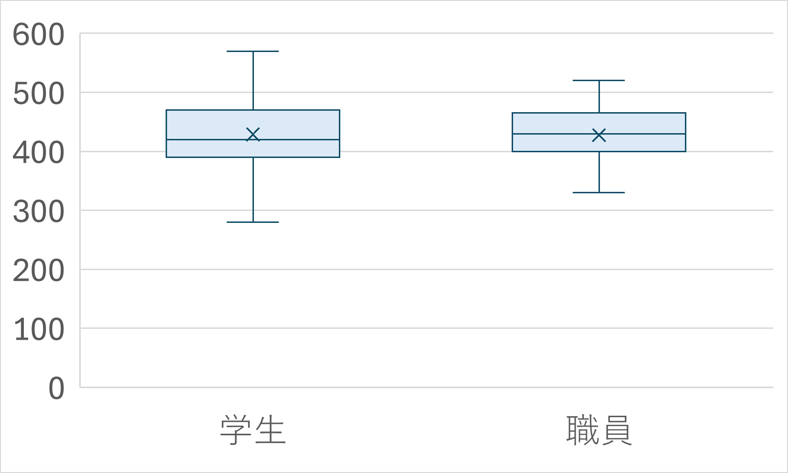
四角い箱とその両端から生えているひげから構成されているグラフで、データのばらつきを示すのに用いられます。
箱ひげ図は四分位数と最大値・最小値を表しています。小さい方から見て
- 最小値：ひげの下端
- 第1四分位数（下位25％の値）：箱の下底
- 第2四分位数（下位50％の値、中央値）：箱の中央の線
- 第3四分位数（下位75％の値）：箱の上底
- 最大値：ひげの上端
で表されています（下図参照）。
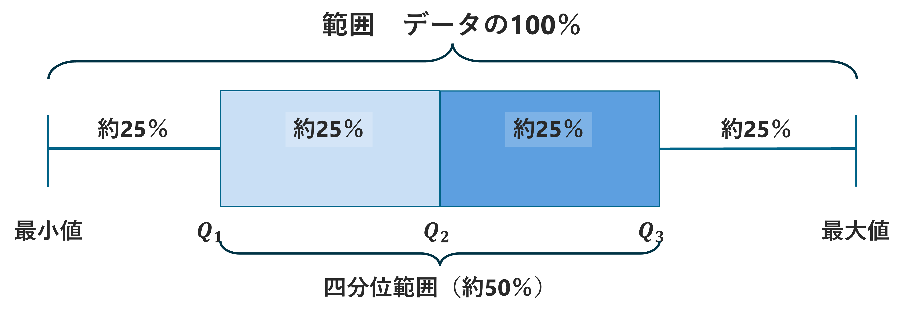
ヒストグラムでもデータのばらつきを見ることはできますが、分布の情報を四分位数に集約し、情報を落とすことで、より分布のばらつきに注目できる点、複数のデータの比較が容易な点がメリットです。
Excelで箱ひげ図を作る
Excelでヒストグラムを作るの手順1で、ヒストグラムの代わりに箱ひげ図を選択すれば、簡単に箱ひげ図を作成できます。
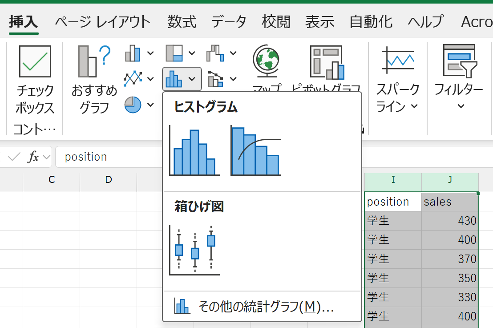
その他の代表的なグラフ
他に、よく使われる代表的なグラフを紹介します。それぞれのグラフが得意なデータがあるので、データの特性に合わせて適切なグラフを選ぶことが重要です。
ちなみに、データの特性を分かりやすく伝えるためには、余分な装飾は省くことが望ましいです。3Dにしない、影を付けない、過度にカラフルにしないようにし、できるだけシンプルで色数を抑えたグラフになるよう意識しましょう。
逆に言えば、装飾が多いグラフは、データの特性を覆い隠しているケースもあります。グラフを解釈するときには、そのグラフが何を伝えたいグラフなのかを考えながら解釈するのが良いでしょう。
折れ線グラフ
数的データの時間的な変化を示す際に用いられるグラフです。
以下のグラフは、学祭の売り上げデータから作成した、時間当たりの売り上げです。
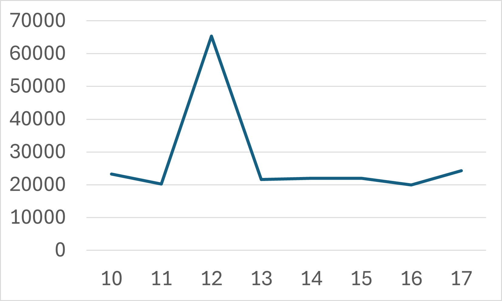
他にも、例えば年別の人口推移、月別の飛行機のチケット代の推移、年別の米の価格の推移など、時系列データの表示に適しています。
注意点
- 複数のデータを重ねるときは、色分けや目盛りを工夫する
（例） - 線の区別がつきやすいよう、色分けをしたり、実線と破線を使い分けたりする - 縦軸の目盛りが\(0\)から始まると変化がとらえづらいときは、適宜目盛りを省略する - 数値が大きく異なるグラフを重ねるときは、一方の目盛りを右側に配置する
円グラフ・帯グラフ
カテゴリデータの各項目が全体に占める割合を示す際に用いられるグラフです。
以下のグラフは、学祭の売り上げデータから作成した、購入品の内訳です。
他にも、国籍別外国人の割合、血液型、男女比などのデータを表示する際に適しています。
注意点
- カテゴリは、（円グラフのときは）12時の位置から時計回りに、（帯グラフのときは）左から順に、大きい順で並べる
- その他は1番最後
- 面積が小さいと見づらいので、割合が小さいものはまとめてその他にする
- データに順序（例えば、「とても満足」「満足」「不満」「とても不満」など）がある場合は、割合順ではなくデータの順序通りに並べる
Excelでさまざまなグラフを作る
Excelでヒストグラムを作るの手順1で、ヒストグラムの代わりに作りたいグラフを選択することで、さまざまなグラフを作ることができます。
統計量
ビジュアル化は便利ですが、問題点もあります。
グラフから受ける印象が人によって異なってしまう
同じヒストグラムを見ても、データがまんべんなく分布していると感じる人もいれば、まとまって分布していると感じる人もいるでしょう。
複数のデータを比較することが難しい
それぞれのデータの特徴はどの程度似通っていて、どの程度異なるのか、その判断も人によって異なるでしょう。
このような問題点を解決するために、グラフとともに統計量（データの特徴を数値に集約すること）を計算していくことが大切です。
ここでは、代表的な統計量として、平均、分散、標準偏差、共分散、相関係数の計算方法を学びます。
平均
平均は、データの中心（重心）を表す数値です。
\(n\)個の観測値からなるデータ\((x_{1}, \cdots, x_{n})\)の平均\(\bar{x}\)は、
\[ \bar{x} = \frac{1}{n}(x_{1} + \cdots + x_{n}) = \frac{1}{n}\sum_{i=1}^{n}x_{i} \]
で求められます。つまり、観測値の値をすべて足し、それを観測値の個数（データサイズ）で割ったものです。
似たような統計量に中央値がありますが、両者の間にはいくつかの違いがあります。
平均
- データは平均の周辺に分布する
- 多く現れる値に影響を受ける
- 極端な値に影響を受ける
中央値
- データを小さい順に並べたときに真ん中に位置する値
- データが中央値の周辺に分布するとは限らない
- 極端な値に影響を受けにくい
Excelで平均を計算する
引き続き、学食の売上金額データを用いて平均を計算しましょう。ExcelではAVERAGE関数を使います。
AVERAGE関数
AVERAGE(データの範囲)
（例）sales変数の平均：=AVERAGE(A:A)
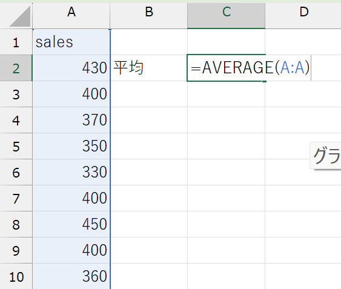
平均を計算することで、データの中心（重心）を知ることができました。学食の売り上げデータでは、1回あたりの購入金額は、428.57円のようです。
度数分布表から平均を求める
度数分布表しか得られない場合でも、階級値と相対度数から平均を求めることができます。
政府機関や民間調査機関が公表するデータは、あらかじめ度数分布表に集計されていることも多いため、ぜひ覚えておきましょう。
度数分布表を使うときは、階級値と相対度数をかけたものをすべての階級値について合計します。
相対度数は \(\frac{度数}{サンプルサイズ}\) で求められるため、階級値 \(\times\) 相対度数という式は、観測値をすべて階級値に置き換えたときの平均の式と一致します（確認してみてください）。
Excelでは、SUMPRODUCT関数を使います。
SUMPRODUCT関数
SUMPRODUCT(配列1, 配列2, ...)
SUMPRODUCT関数は、指定した配列の同じ行同士を掛け算し、それを合計する関数です。
（例）sales変数の度数分布表から平均を求める：=SUMPRODUCT(F2:F5, H2:H5)
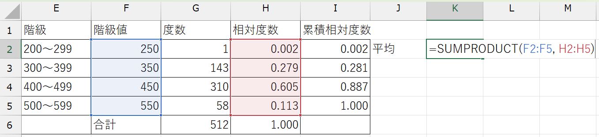
今回は階級値と相対度数の2つの配列を使っていますが、より多くの配列を指定することもできます。
分散と標準偏差
データの特徴を知るためには、データの中心だけではなく、データのばらつきを知ることも大切です。
例えば、以下のような例を考えてみましょう。
- 5人の購入金額は、それぞれ \(\{500, 500, 500, 500, 500\}\) （円）
- 5人の購入金額は、それぞれ \(\{100, 300, 500, 700, 900\}\) （円）
どちらも平均購入金額では500円になりますが、内訳は大きく異なります。
ケース1では全員が同じ金額を支払っているため、同じ商品を購入している可能性が高いです。売上を伸ばすためには、その商品名を広告の全面に打ち出したり、売り切れないよう仕入れを増やすことが考えられるかもしれません。
一方ケース2では全員がバラバラの商品を購入しているため、特定の商品の販促だけに注力していると、売上が下がってしまうかもしれません。
このように、ばらつきはデータの特徴を表す大事な指標です。
データのばらつきを表す指標が、分散と標準偏差です。データ\((x_{1}, \cdots, x_{n})\)の分散\(\sigma^2\)は、
\[ \sigma^2 = \frac{1}{n}\{(x_{1} - \bar{x})^2 + \cdots + (x_{n} - \bar{x})^2\} = \frac{1}{n}\sum_{i=1}^{n}(x_{i} - \bar{x})^2 \]
で求められます。つまり、各観測値の平均からの乖離（偏差）の2乗和の平均です。
標準偏差 \(\sigma\) は、分散の平方根を取って元のデータと単位をそろえた指標です。
どちらも必ず0以上の値をとり、値が大きいほどばらつきが大きい（ \(=\) 平均から離れた観測値が多い）ことを意味します。
Excelで分散と標準偏差を計算する
学食の売上金額の分散と標準偏差を計算しましょう。Excelでは、分散にはVAR.P関数、標準偏差にはSTDEV.P関数を使います。
VAR.P関数
VAR.P(データの範囲)
（例）sales変数の分散：=VAR.P(A:A)
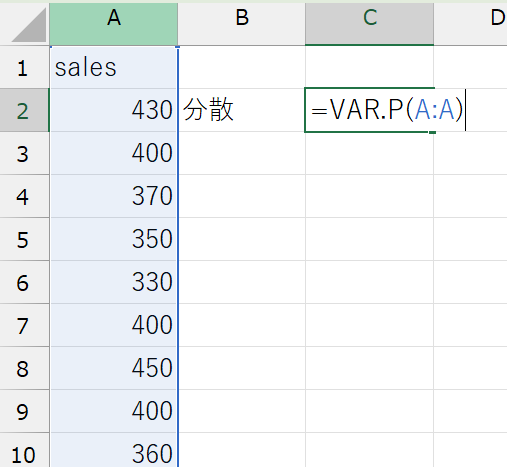
STDEV.P関数
STDEV.P(データの範囲)
（例）sales変数の分散：=STDEV.P(A:A)
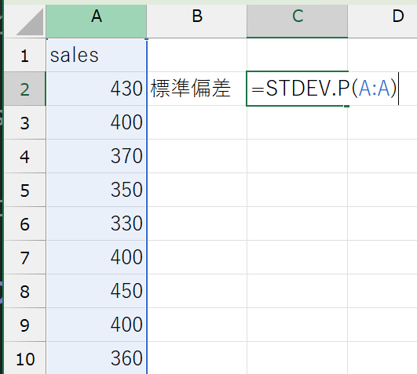
分散と標準偏差を求めることで、データのばらつきを知ることができました。学食の売り上げデータでは、購入金額は平均で52.7円、平均から離れているようです。
.P関数と.S関数
VAR.P関数とSTDEV.P関数には、似た関数でVAR.S関数とSTDEV.S関数が存在します。
実は2種類の関数は微妙に用途が異なります。
.P関数
厳密には標本分散を計算する関数です。
標本分散とは、文字通り手元にあるデータの分散を意味します。
手元のデータが、性質を知りたい対象（母集団）全体と見なせるときや、単に手元のデータの分散を知りたいときに使用します。
.S関数
こちらは不偏分散を計算する関数です。
不偏分散とは、手元のデータが母集団全体だと見なせないときに、手元のデータから母集団の分散を推定するときに使用します。
ただし、データ\((x_{1}, \cdots, x_{n})\)の不偏分散\(s^2\)は、
\[ s^2 = \frac{1}{n-1}\{(x_{1} - \bar{x})^2 + \cdots + (x_{n} - \bar{x})^2\} = \frac{1}{n-1}\sum_{i=1}^{n}(x_{i} - \bar{x})^2 \]
で求められ、標本分散\(\sigma^2\)との違いは、\(\frac{1}{n}\) をかけるか、\(\frac{1}{n-1}\) をかけるかだけです。サンプルサイズ \(n\) が大きいときにはほぼ同じような値になるため、十分なサイズのデータを集めることができれば、どちらを使うかはあまり気にしなくても良いでしょう。
共分散と相関係数
これまでは1変数（1つの調査項目）について平均や分散などの指標に注目してきました。ですが、一般的に、因果関係や予測値を知りたいときには、少なくとも2つの事柄の関係をチェックする必要があります。
例えば、学食の売上を上げていくためには、売上金額が時間や気温など、ほかのどのような変数と連動しているかを知ることも大事でしょう。
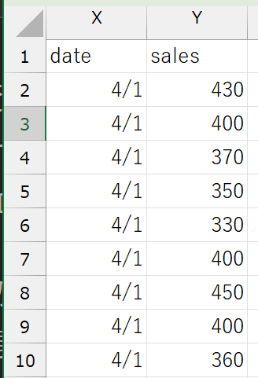
上図は、売上金額と購入日のデータを並べたものですが、生のデータを一見しただけでは、両者にどのような関係があるのか（あるいはないのか）を読み取ることは難しいと思います。
ここでは、2変数の関係を把握するための手法を学びましょう。
散布図
2変数の関係を視覚的に把握するには散布図が便利です。
散布図は、横軸に一方の変数、縦軸にもう一方の変数をとり、各データが当てはまるところに点を打って示す（プロットする）グラフです。
具体的に、売上金額と日付の関係を考えてみましょう。日付を横軸、売上金額を縦軸にとったとき、手元にある購入ID \(i\) のデータは \((日付, 売上金額) = (x_{i}, y_{i})\) と表すことができます。この \((x_{i}, y_{i})\) を座標とする点を平面上に表したものが散布図です。
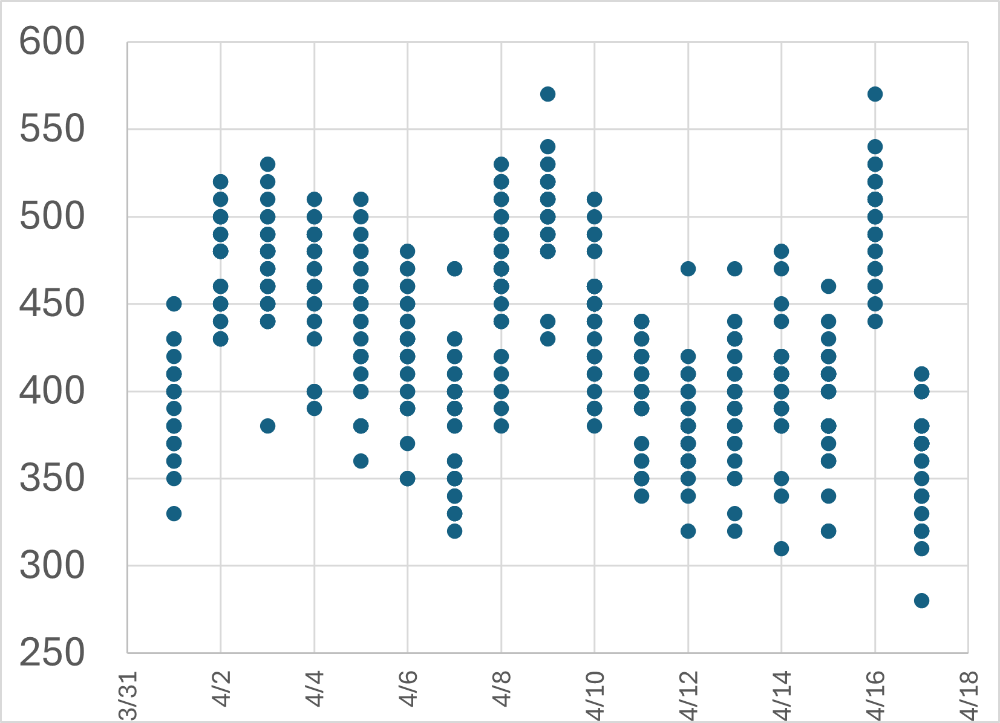
2つの変数が連動して動くことを相関と呼びます。
- 一方が増加（減少）すればもう一方も増加（減少）する傾向があるとき、2変数間に正の相関があるという。
- 一方が増加（減少）すればもう一方は減少（増加）する傾向があるとき、2変数間に負の相関があるという。
Excelで散布図を作る
Excelでヒストグラムを作るの手順1で、相関を見たい2変数のデータ範囲を選択し、散布図を選択することで、簡単に散布図を作ることができます。
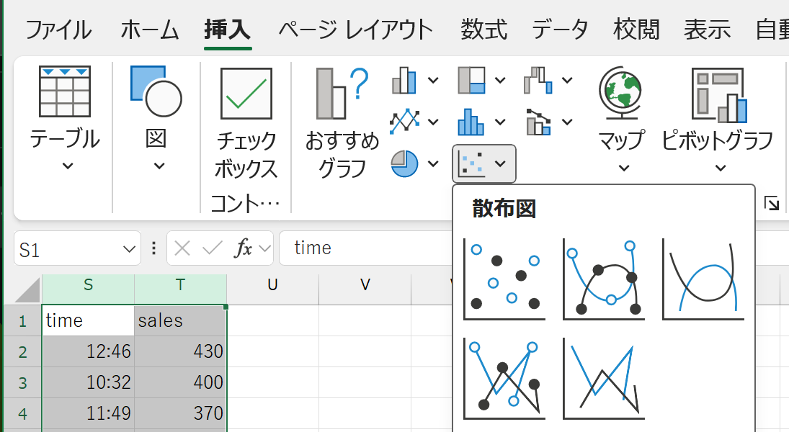
散布図を選択する画像
共分散
散布図は、2変数間の相関を視覚的に把握するのに便利ですが、散布図の軸のとり方や縦横の比によっては、情報を読み誤る危険性があったり、1組の変数の相関を別の組の変数の相関と比較することが難しかったりと、問題点もあります。
このような問題点を克服するために、2変数の相関を数値化した共分散を計算していきましょう。
\(n\)個の観測値のペアからなるデータ\(\{(x_{1}, y_{1}), \cdots, (x_{n}, y_{n})\}\)の共分散\(\sigma_{xy}\)は、
\[ \sigma_{xy} = \frac{1}{n}\sum_{i=1}^{n}(x_{i}-\bar{x})(y_{i} - \bar{y}) \]
で求められます。つまり、 \(x\) と \(y\) それぞれの観測値からそれぞれの平均を引いたもの（\(x\) と \(y\) それぞれの偏差）をかけたものの平均です。
共分散は、 \(x\) と \(y\) に正の相関があるときは正の値、負の相関があるときは負の値をとります。共分散がゼロとなるときは無相関であるといいます。
Excelで共分散を計算する
学食データの売上金額と時間変数の共分散を計算してみましょう。ExcelではCOVARIANCE.P関数を使います。
※COVARIANCE.P関数とCOVARIANCE.S関数の違いは、.P関数と.S関数を参照してください。
COVARIANCE.P関数
COVARIANCE.P(データの範囲1, データの範囲2)
（例）sales変数とdate変数の共分散：=COVARIANCE.P(A:A, B:B)
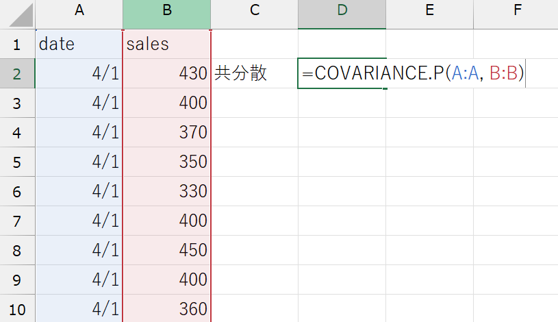
共分散を計算することで、2変数の相関の強さを知ることができました。売上金額と時間の共分散は\(-64.14\)、つまり、時間と売上の間には負の相関があるようです。
共分散を解釈するときは単位に気をつけてください。
共分散の計算式を見ると分かるように、共分散の単位はそれぞれの変数の単位の積になります。sales変数とdate変数の共分散の場合、その単位は円
\(\times\)
日です。
「日付が〇日経つと△円売上が下がる」といった解釈はできません。共分散から分かるのは、あくまでその2変数間に正負どちらの相関があるのか、だけです。
また、例えばsales変数とtime変数の共分散が\(0.09\)だと分かった場合でも、date変数とtime変数のどちらがsales変数との相関が強いかを比較することはできません。
相関係数
共分散の「値が変数の単位に影響され、解釈が難しい」という弱点を克服した指標が相関係数です。
\(n\)個の観測値のペアからなるデータ\(\{(x_{1}, y_{1}), \cdots, (x_{n}, y_{n})\}\)の相関係数\(\rho\)は、
\[ \rho = \frac{\sigma_{xy}}{\sigma_{x}\sigma_{y}} \]
（ただし、 \(\sigma_{x}\), \(\sigma_{y}\) はそれぞれ変数 \(x\), \(y\) の標準偏差）
で求められます。つまり、 \(x\) と \(y\) の共分散を \(x\) と \(y\) それぞれの標準偏差の積で割ったものです。
相関係数には、以下のような特徴があります。
- 2変数間の統計的な傾向を1つの数字で表現する指標
- あくまで統計的傾向を示す指標であり、因果関係を保証するものではないことに注意
- 必ず \(-1\) から
\(1\) までの値をとる
- 正の相関があれば相関係数の値は正
- 負の相関があれば相関係数の値は負
- \(1\)
に近いほど強い正の相関、 \(-1\)
に近いほど強い負の相関を示す
- 慣例的に、 \(0.4 \sim 0.7\) でやや強い正の相関、\(0.7\) 以上で強い正の相関があるということが多い
- 反対に、\(-0.7 \sim -0.4\) でやや強い負の相関、\(-0.7\) 以下で強い正の相関があるという
- 無相関のときは相関係数は \(0\)
- 変数の単位に依存しないため、複数の変数の関係を比較する際に便利
Excelで相関係数を計算する
学食データの売上金額と日付変数の相関係数を計算してみましょう。ExcelではCORREL関数を使います。
CORREL関数
CORREL(データの範囲1, データの範囲2)
（例）sales変数とtime変数の相関係数：=CORREL(:, :)
売上金額と時間の相関係数は\(-0.26\)、つまり、日付と売上の間には弱い負の相関があるようです。
無相関 \(\ne\) 関係がない
「無相関であること」と「関係がない」は違う意味を表します。
先ほどsales変数とdate変数の相関係数は\(-0.26\)であることが分かりました。基準に照らし合わせると2変数間にほとんど相関はないと言えます。
2変数は全くの無関係に動いている変数だと言えるでしょうか？
散布図に立ち返ってみましょう。
散布図は、2変数が連動して動いていることを示しているように見えます。
共分散や相関係数は、2変数間の線形的な（直線で示せる）相関関係のみを示します。
今回のようにdate変数の一部でピークがくるような、線形以外の相関関係を表すことはできません。
共分散や相関係数がほとんど \(0\) に近いからといって、変数間に全く関係がないと言えるとは限らないので、数値とグラフ、両方を使ってデータの特徴をとらえようとすることが大切です。
まとめ
この章では、手元のデータを分かりやすい形に加工し、表やグラフで視覚的に分布を把握したり、平均や分散などの統計量を用いて数値的にデータの特徴をとらえたりする方法を学んできました。
これらの工程は、データ分析を行う際のはじめの一歩です。まずは手元のデータの特徴を把握することが大切です。
しかし、手元のデータを使って何かを改善したり、解決したりする際には、別の適切な手法が必要です。
次の章では、手元のデータを使って何かを予測したり、効果検証を行ったりするための、考え方や手法を学んでいきます。